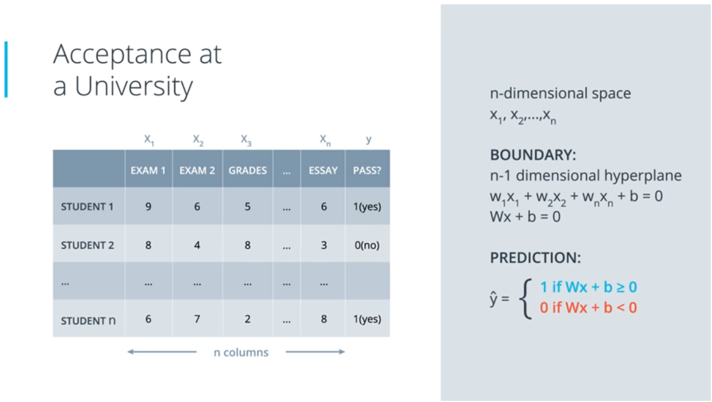
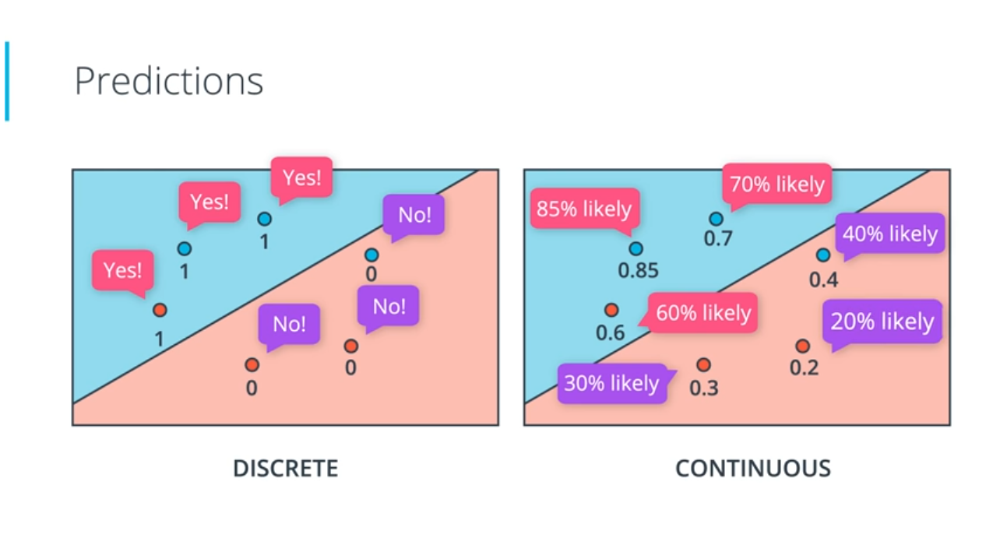
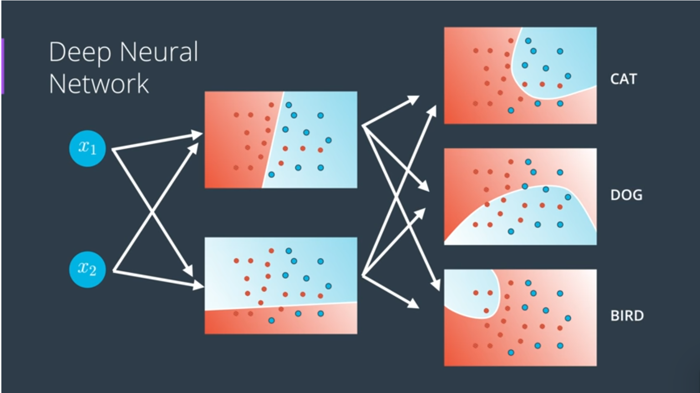

Deep Learning is a subfield of Machine Learning concerned with algorithms inspired by the structure and function of the brain called Artificial Neural Networks.
In a nutshell, the neural network aims at learning higher level features formed by the composition of lower level features.
Pretty much everything. Recent applications include things like beating humans in games such as Go or Jeopardy, detecting spam in emails, forecasting stock prices, recognizing images in a picture and even diagnosing illnesses. Oh and of course, it's at the core of self-driving cars.
Neural Networks
Neural Networks vaguely mimic the process of how the brain operates, with neurons that fire bits of information.
While the high level and conceptual thinking of artificial neural networks is inspired by neurons and neural networks in the brain, the ML implementation of these concepts has diverged significantly from how the brain works. Moreover, as the field of ML progressed over the years and new complex ideas and techniques have been developed, that link has further weakened.
Suppose we want to predict whether a student will enter university or not based on their grades and test scores.
The goal of the algorithm is to find a boundary line that keeps most of the blue points above it, and most red points below it.
Now suppose that instead of just grades and test scores, we want to make a similar prediction but also take into consideration the student's class rank.
We'll now be working in three dimentions.
Now we have three axes, x1 for the test, x2 for the grades and x3 for the class ranking.
The equation can be simplified to Wx + b = 0
Our prediction (y-hat) should still tell us if the student is above this division plane (accepted) or below it (rejected).
The interesting thing is that even if we have n-dimensions, the equation remains the same.
Our prediction (y-hat) should still tell us if the student is above this division plane (accepted) or below it (rejected).
Perceptrons are the building blocks of neural networks. They are just the encoding of our equation into a small graph. We fit our data and boundary line inside a node. Then we add small nodes for the inputs, which are tests and grades.
The perceptron simply plots the points provided by the inputs and checks whether the result is a pass or a fail.
Notice how the output is either a Yes or a No. To come up with this result we use what is called a Step Function. There are other functions that can be applied to the output but let's not get into that now.
How do we find the line that separates the red points from the blue points in the best possible way? First we need to plot and classify our points. Then we plot a line and check how badly it performs the classification of the given points.
Once we've found how good or badly the line has performed, we can either move it towards or away from our point. We can use a small Learning Rate so that the line doesn't move too drastically. We then multiply our original numbers by the learning rate and receive a new equation, which will shift the line. That's the trick we will use repeatedly for the perceptron algorithm.
Say we're on a mountain and want to descend in the fastest way possible. In an ideal world, we would look around us and pick the path that would allow us to desced the fastest in one direction, and then we'd repeat the process over and over. This is called gradient descent.
We can use a similar method to detect the error in our model, and then gradually shift the line in one direction or the other. We can also assign larger weights to the points that are misclassified (similar to how we'd pick a direciton to step towards on a mountain.) This will allow the line to move more rapidly towards points that are misclassified. The goal is to ensure the sum of our errors is as small as possible.
If we want the line to move closer to one point and not the other, we can't have the points simply tell us yes or no. They need to tell us with how much confidence they are in the right zone. In other words, we need a probability of their correctness. The probability is a function of the point's distance from the line. We then calculate the correctness of our model with something called cross-entropy (which I won't get into detail here). Cross-entropy is basically the sum of the negative logrithms of the probabilities of the points being the right color.
If the error of our function is given by E, then the gradient of E is given by the vector sum of the partial derivates of E with respect to w1 and w2. The gradient tells us the direction we want to move if we want to increase our error function the most. So if we take the negative of the gradient, this will tell us how to decrease the error function the most.
The sigmoid function will yield numbers close to 1 for large positive numbers, and numbers close to 0 for large negative numbers.
Our new perceptron takes the inputs, multiplies them by the weights in the edges, then adds the results. It then applies the sigmoid function. Whereas our previous step function told us whether a student got accepted or rejected, our sigmoid function will tell us the probability with which the student gets accepted.
Say our data is a bit messier and cannot be easily separated by a line. In that case we will need a model that can still properly separate students who pass from those who fail, but the line will need to be more complex to make up for the additional criteria. How do we create such non-linear models?
The trick is to combine two linear models into a non-linear model. We then apply the sigmoid function to every point which will give us a curved line.
This is precisely what happens in the neural network.
What happens if we combine a two-node input to a three-node hidden layer? We will simply get a triangular shaped output layer.
What happens if we have 3 input nodes?
That simply means our output will be a three-dimensional layer. In general, if we have n-nodes as an input, our output will be in n-dimensional space.
What if our output layer has more nodes? In that case, we will get a multi-class classification model.
Finally, what if we have more hidden layers? In that case, we have what's called a Deep Neural Network.
Our linear models combine to create non-linear models, and then those combine to create even more non-linear models. Lots of hidden nodes can create highly complex models. This is where the magic of neural networks happens.
This process of taking inputs, combining their weights to obtain a non-linear model, then combining those to produce a non-linear output is called feedforward.
Once we've done a feedforward operation, we first compare the output of the model with the desired output. We then calculate the error. Once we have that, we run the feedforward operation backwards (backpropagation) to spread the error to each of the weights. Then we use this to update the weights, and get a better model. We repeat this process until we are happy with the model.